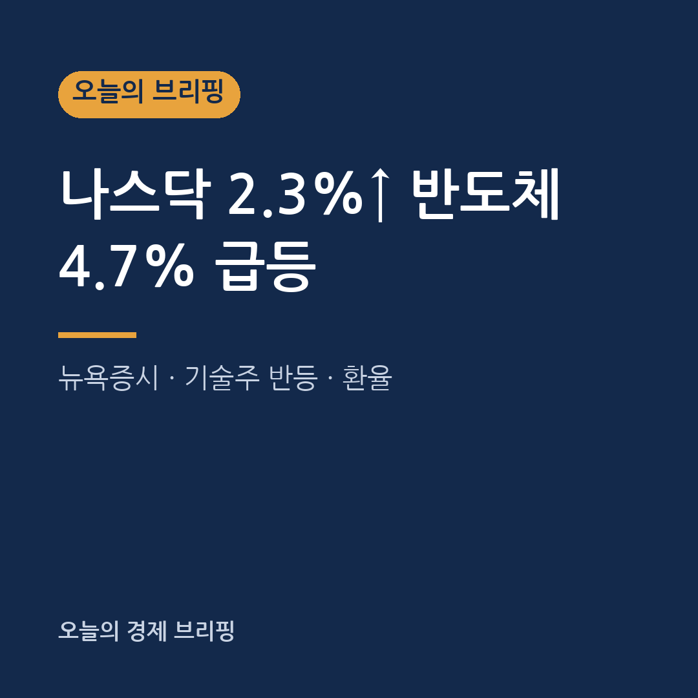
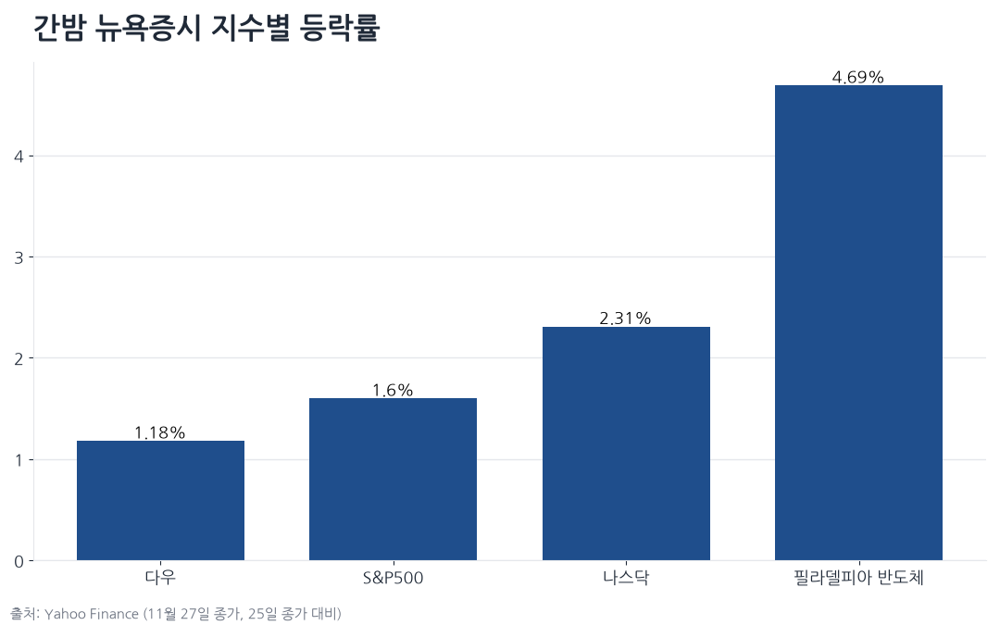

2026-11-28-0730-naver 발행 키트 · 이 페이지는 검색에 노출되지 않습니다.
제목
카테고리
오늘의 브리핑태그
본문 (그림·표 포함)
휴대폰 블로그 앱에서는 그림이 같이 붙지 않을 수 있어요. 그때는 [글자만 복사] 후 아래 이미지를 저장해 [그래프1]·[표1] 자리에 첨부하세요.

추수감사절 연휴를 보내고 돌아온 어젯밤 미국 증시가 제대로 반등했어요. 출근길에 딱 세 가지만 기억하고 가세요.
▶ 한 줄 총평
기술주가 크게 살아나면서 3대 지수가 모두 올랐어요. 그중에서도 반도체가 가장 세게 뛰었습니다.
간밤 뉴욕증시 마감 (11월 27일)
| 지수 | 종가 | 등락률 |
|---|---|---|
| 나스닥 | 24,129.50 | +2.31% |
| S&P500 | 7,297.49 | +1.60% |
| 다우 | 50,774.94 | +1.18% |
| 필라델피아 반도체 | 9,186.71 | +4.69% |
출처: Yahoo Finance
▶ 얼마나 올랐을까요
나스닥은 2.31% 오른 24,129.50으로 마감했어요. S&P500은 1.60% 오른 7,297.49, 다우는 1.18% 오른 50,774.94였고요.
필라델피아 반도체지수는 4.69% 뛰어 9,186.71을 기록했어요. 비교 기준은 25일 종가예요. 26일은 휴장이었거든요.

▶ 왜 올랐을까요
한동안 "AI에 쓴 돈만큼 벌 수 있을까" 하는 걱정이 기술주를 눌러 왔어요. 그 매도 압력이 누그러지자 싸졌다고 본 사람들의 매수가 들어왔다는 설명이에요.
UBS의 한 전략가는 팔 사람은 어느 정도 다 팔았다는 신호가 여럿 보인다고 봤대요.
메모리 반도체도 크게 올랐어요. 마이크론은 7.34%, SK하이닉스 미국 예탁증서(ADR, 해외 증시에 거래되도록 만든 주식 대용 증서)는 7.38% 올랐어요. 샌디스크는 16%대 상승이었고요.
지난 20일 크게 빠졌던 걸 상당 부분 되돌린 모습이에요. 다만 앞으로 이익이 줄 수 있다는 걱정은 아직 남아 있다고 해요.
한 주 성적도 좋았어요. S&P500은 주간 5.6% 올랐고, 다우는 4년 만에 가장 큰 주간 상승률을 냈다고 합니다.
▶ 환율·금리·유가는요
미국 국채 10년물 금리는 연 4.94%로 25일의 4.85%보다 올랐어요. WTI 유가는 배럴당 83.08달러로 0.72% 내렸고요.
원·달러 환율은 1,333원으로 전날보다 9.97원 내렸어요. 달러가 조금 약해지니 해외 결제나 직구하는 분들은 숨통이 트이죠.
▶ 오늘 우리 증시에서 볼 것
미국 반도체가 크게 오른 만큼 국내 반도체 대형주가 그 분위기를 이어받는지 지켜보세요. 환율이 1,330원대로 내려온 것도 외국인 수급에 어떻게 작용할지 볼 대목이에요.
일부 기사는 다가오는 FOMC(미국 연방공개시장위원회, 기준금리를 정하는 회의)를 분수령으로 짚었어요. 금리 숫자가 다시 올랐다는 점도 잊지 마세요.
정리하면, 어젯밤은 걱정이 한풀 꺾이며 반등한 날이었어요. 오늘 장 보시면서 느낀 점 있으면 댓글로 나눠 주세요.
출처 (본문 맨 아래에 붙여넣기 권장)
- 한국경제, AI 투자 우려 속 기술주 반등…나스닥 2.3% 상승 [뉴욕증시], https://www.hankyung.com/article/2026112857597 - YTN, 뉴욕 증시, AI·기술주 반등에 상승 마감...필리 반도체 지수 4.69% 급등, https://news.google.com/rss/articles/CBMiXkFVX3lxTE1EQ0p2LUc1eS0zc3BmRmkyOTFmOWNVUGdlNk83ZlZudjF4S3FmNnN5aXVKbFhmc0RRMXVzV21WNWtoQ2lmY3hWaVdEaElqbzdERk5QMHVUczBoS0ZJWmc?oc=5 - 뉴스핌, 뉴욕증시, AI주 저가 매수에 일제히 상승…S&P500 주간 5.6%↑, https://news.google.com/rss/articles/CBMiXEFVX3lxTE1WTmpwc3V4WFpsUWJsV3IxUnJhV2Y3NGRDbUtoU09zczM0MURVdGRNeURoSUZWX0d1X0tiNDVDQ0pESVBhdmljbW9NRzVNRDJ5bFBGcE1kb05fa3d5?oc=5 - 연합뉴스, 샌디스크 16%↑…메모리주, '이익절벽' 우려 속 주간 반등, https://www.yna.co.kr/view/AKR20261128008900009 - 시세: Yahoo Finance